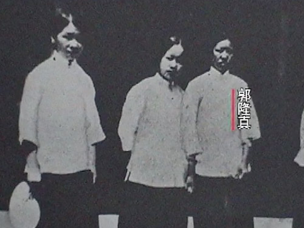
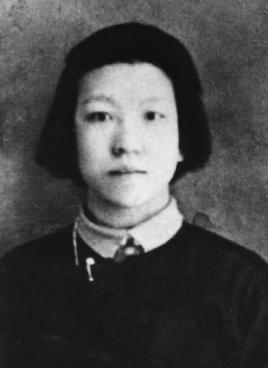
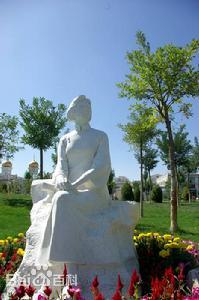

历史人物
坚贞不屈巾帼志——郭隆真
-

郭隆真
原名郭淑善，化名石衫、石珊、林一、林逸。回族，1894年3月18日出生，河北省大名县金滩镇人。她是中国共产党早期的女革命家，是北方妇女运动的先驱者和工人运动的卓越领导人。1931年5月4日凌晨，她和邓恩铭等同志一起被敌人杀害。 -

人物事迹
郭隆真一生追求真理；寻求救国救民的道路，是一位民族英雄，巾帼旗帜。正如邓颖超同志对烈士的评价那样：“她有火一样的热情，爱护着国家、民族；亦同样以火热的高度，憎恨当时的亲日卖国贼”。“在五四运动中，在她一生的革命工作中，都证明她是一位坚决勇敢、不顾一切、精诚不懈的奋斗者”。 -

纪念郭隆真
2004年4月11日是郭隆真烈士诞辰110周年纪念日。她是我党早期革命活动家，伟大的共产主义战士，工人运动、妇女运动、学生运动的杰出领导者。在“五四”运动中，她就是天津爱国运动的领导人之一，与周恩来、邓颖超等老一辈无产阶级革命家同为“觉悟社”的重要成员。1923年，郭隆真经周恩来介绍加入中国共产党。 1925年后，她先后同我党早期重要领导人李大钊、刘少奇等一道工作，组织参加了无数次爱国游行、请愿、演说等革命活动，曾先后6次被捕、5次入狱。她始终毫不畏惧、坚贞不屈，1931年在山东济南英勇就义。
返回目录